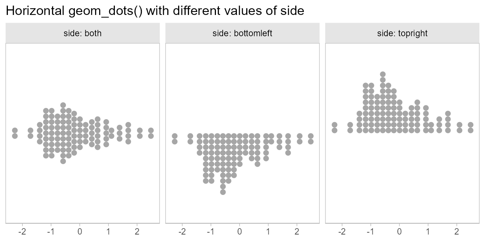
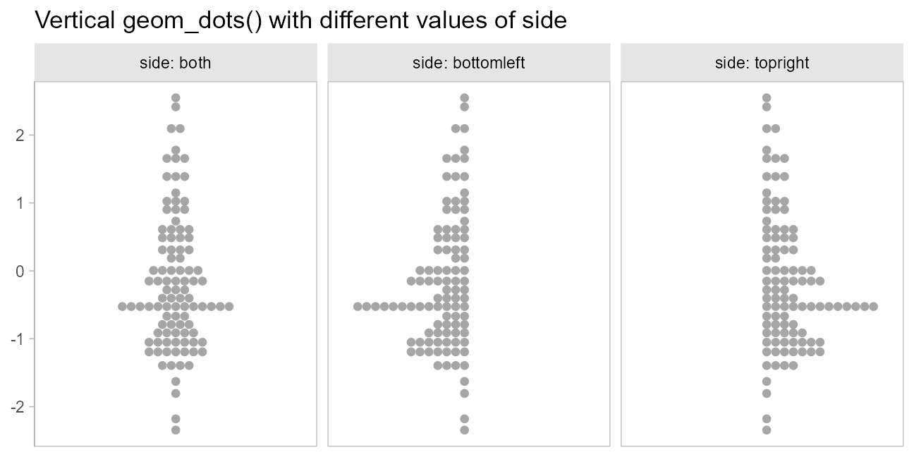

Dots + interval stats and geoms
Matthew Kay
2025-04-22
Source:vignettes/dotsinterval.Rmd
dotsinterval.RmdIntroduction
This vignette describes the dots+interval geoms and stats in
ggdist. This is a flexible sub-family of stats and geoms
designed to make plotting dotplots straightforward. In particular, it
supports a selection of useful layouts (including the classic Wilkinson
layout, a weave layout, and a beeswarm layout) and can automatically
select the dot size so that the dotplot stays within the bounds of the
plot.
Anatomy of geom_dotsinterval()
The dotsinterval family of geoms and stats is a
sub-family of slabinterval (see vignette("slabinterval")),
where the “slab” is a collection of dots forming a dotplot and the
interval is a summary point (e.g., mean, median, mode) with an arbitrary
number of intervals.
The base geom_dotsinterval() uses a variety of custom
aesthetics to create the composite geometry:

Depending on whether you want a horizontal or vertical orientation,
you can provide ymin and ymax instead of
xmin and xmax. By default, some aesthetics
(e.g., fill, color, size,
alpha) set properties of multiple sub-geometries at once.
For example, the color aesthetic by default sets both the
color of the point and the interval, but can also be overridden by
point_color or interval_color to set the color
of each sub-geometry separately.
Due to its relationship to the geom_slabinterval()
family, aesthetics specific to the “dots” sub-geometry are referred to
with the prefix slab_. When using the standalone
geom_dots() geometry, it is not necessary to use these
custom aesthetics:

geom_dotsinterval() is often most useful when paired
with stat_dotsinterval(), which will automatically
calculate points and intervals and map these onto endpoints of the
interval sub-geometry.
stat_dotsinterval() and stat_dots() can be
used on two types of data, depending on what aesthetic mappings you
provide:
Sample data; e.g. draws from a data distribution, bootstrap distribution, Bayesian posterior distribution (or any other distribution, really). To use the stats on sample data, map sample values onto the
xoryaesthetic.Distribution objects and analytical distributions. To use the stats on this type of data, you must use the
xdist, orydistaesthetics, which take distributional objects,posterior::rvar()objects, or distribution names (e.g."norm", which refers to the Normal distribution provided by thednorm/pnorm/qnormfunctions). When used on analytical distributions (e.g.distributional::dist_normal()), thequantilesargument determines the number of quantiles used (and therefore the number of dots shown); the default is100.
All dotsinterval geoms can be plotted horizontally or
vertically. Depending on how aesthetics are mapped, they will attempt to
automatically determine the orientation; if this does not produce the
correct result, the orientation can be overridden by setting
orientation = "horizontal" or
orientation = "vertical".
Controlling dot layout
Size and layout of dots in the dotplot are controlled by four
parameters: scale, binwidth,
dotsize, and stackratio.

scale: Ifbinwidthis not set (isNA), then thebinwidthis determined automatically so that the height of the highest stack of dots is less thanscale. The default value ofscale, 0.9, ensures there is a small gap between dotplots when multiple dotplots are drawn.-
binwidth: The width of the bins used to lay out the dots:-
NA(default): Usescaleto determine bin width. - A single numeric or
unit(): the exact bin width to use. If it isnumeric, the bin width is expressed in data units; useunit()to specify the width in terms of screen coordinates (e.g.unit(0.1, "npc")would make the bin width 0.1 normalized parent coordinates, which would be 10% of the plot width.) - A 2-vector of numerics or
unit()s giving an acceptable minimum and maximum width. The automatic bin width algorithm will attempt to find the largest bin width between these two values that also keeps the tallest stack of dots shorter thanscale.
-
dotsize: The size of the dots as a percentage ofbinwidth. The default value is1.07rather than1. This value was chosen largely by trial and error, to find a value that gives nice-looking layouts with circular dots on continuous distributions, accounting for the fact that a slight overlap of dots tends to give a nicer apparent visual distance between adjacent stacks than the precise value of1.stackratio: The distance between the centers of dots in a stack as a proportion of the height of each dot.stackratio = 1, the default, mean dots will just touch;stackratio < 1means dots will overlap each other, andstackratio > 1means dots will have gaps between them.
Side
The side aesthetic allows you to adjust the positioning
and direction of the dots:
-
"top","right", or"topright": draw the dots on the top or on the right, depending onorientation -
"bottom","left", or"bottomleft": draw the dots on the bottom or on the left, depending onorientation -
"topleft": draw the dots on top or on the left, depending onorientation -
"bottomright": draw the dots on the bottom or on the right, depending onorientation -
"both": draw the dots mirrored, as in a “beeswarm” plot.
When orientation = "horizontal", this yields:
set.seed(1234)
x = rnorm(100)
side_plot = function(...) {
expand.grid(
x = x,
side = c("topright", "both", "bottomleft"),
stringsAsFactors = FALSE
) %>%
ggplot(aes(side = side, ...)) +
geom_dots() +
facet_grid(~ side, labeller = "label_both") +
labs(x = NULL, y = NULL) +
theme(panel.border = element_rect(color = "gray75", fill = NA))
}
side_plot(x = x) +
labs(title = "Horizontal geom_dots() with different values of side") +
scale_y_continuous(breaks = NULL)
When orientation = "vertical", this yields:
side_plot(y = x) +
labs(title = "Vertical geom_dots() with different values of side") +
scale_x_continuous(breaks = NULL)
Layout
The layout parameter allows you to adjust the algorithm
used to place dots:
-
"bin"(default): places dots on the off-axis at the midpoint of their bins as in the classic Wilkinson dotplot. This maintains the alignment of rows and columns in the dotplot. This layout is slightly different from the classic Wilkinson algorithm in that: (1) it nudges bins slightly to avoid overlapping bins and (2) if the input data are symmetrical it will return a symmetrical layout. -
"weave": uses the same basic binning approach of “bin”, but places dots in the off-axis at their actual positions (modulo overlaps, which are nudged out of the way). This maintains the alignment of rows but does not align dots within columns. -
"hex": uses the same basic binning approach of “bin”, but alternates placing dots+binwidth/4or-binwidth/4in the off-axis from the bin center. This allows hexagonal packing by setting astackratioless than1(something like0.9tends to work). - “swarm”: uses the
"compactswarm"layout frombeeswarm::beeswarm(). Does not maintain alignment of rows or columns, but can be more compact and neat looking, especially for sample data (as opposed to quantile dotplots of theoretical distributions, which may look better with"bin","weave", or"hex").
When side is "top", these layouts look like
this:
layout_plot = function(layout, side, ...) {
data.frame(
x = x
) %>%
ggplot(aes(x = x)) +
geom_dots(layout = layout, side = side, stackratio = if (layout == "hex") 0.9 else 1) +
labs(
subtitle = paste0("layout = ", deparse(layout), if (layout == "hex") " with stackratio = 0.9"),
x = NULL,
y = NULL
) +
scale_y_continuous(breaks = NULL) +
theme(panel.border = element_rect(color = "gray75", fill = NA))
}
(layout_plot("bin", side = "top") + layout_plot("hex", side = "top")) /
(layout_plot("weave", side = "top") + layout_plot("swarm", side = "top")) +
plot_annotation(title = 'geom_dots() layouts with side = "top"')
When side is "both", these layouts look
like this:
(layout_plot("bin", side = "both") + layout_plot("hex", side = "both")) /
(layout_plot("weave", side = "both") + layout_plot("swarm", side = "both")) +
plot_annotation(title = 'geom_dots() layouts with side = "both"')
Beeswarm plots
Thus, it is possible to create beeswarm plots by using
geom_dots() with side = "both":
set.seed(1234)
abc_df = tibble(
value = rnorm(300, mean = c(1,2,3), sd = c(1,2,2)),
abc = rep(c("a", "b", "c"), 100)
)
abc_df %>%
ggplot(aes(x = abc, y = value)) +
geom_dots(side = "both") +
ggtitle('geom_dots(side = "both")')
side = "both" also tends to work well with the
"hex" and "swarm" layouts for more
classic-looking “beeswarm” plots:
abc_df %>%
ggplot(aes(x = abc, y = value)) +
geom_dots(side = "both", layout = "hex", stackratio = 0.92) +
ggtitle('geom_dots(side = "both", layout = "hex")')
The combination of binwidth = unit(1.5, "mm") and
overflow = "compress" (see the section on large samples,
below) can be used to set the dot size to a specific size while
guaranteeing the layout stays within the bounds of the geom. This
combination is used by two shortcut geoms, geom_swarm() and
geom_weave(), which use the "swarm" and
"weave" layouts respectively. These also use
side = "both", and are intended to make it easy to create
good-looking beeswarm plots without manually tweaking
settings:
set.seed(1234)
swarm_data = tibble(
y = rnorm(300, c(1,4)),
g = rep(c("a","b"), 150)
)
swarm_plot = swarm_data %>%
ggplot(aes(x = g, y = y)) +
geom_swarm(linewidth = 0, alpha = 0.75) +
labs(title = "geom_swarm()")
weave_plot = swarm_data %>%
ggplot(aes(x = g, y = y)) +
geom_weave(linewidth = 0, alpha = 0.75) +
labs(title = "geom_weave()")
swarm_plot + weave_plot
Varying color, fill, shape,
and linewidth
Aesthetics like color, fill,
shape, and linewidth can be varied over the
dots. For example, we can vary the fill aesthetic to create
two subgroups, and use position = "dodge" to dodge entire
“swarms” at once so the subgroups do not overlap. We’ll also set
linewidth = 0 so that the default gray outline is not
drawn:
set.seed(12345)
abcc_df = tibble(
value = rnorm(300, mean = c(1,2,3,4), sd = c(1,2,2,1)),
abc = rep(c("a", "b", "c", "c"), 75),
hi = rep(c("h", "h", "h", "i"), 75)
)
abcc_df %>%
ggplot(aes(y = value, x = abc, fill = hi)) +
geom_weave(position = "dodge", linewidth = 0, alpha = 0.75) +
scale_fill_brewer(palette = "Dark2") +
ggtitle(
'geom_weave(position = "dodge")',
'aes(fill = hi, shape = hi)'
)
Varying discrete aesthetics within dot groups
By default, if you assign a discrete variable to fill,
color,shape, etc it will also be used in thegroup`
aesthetic to determine dot groups, which are laid out separate (and can
be dodged separately, as above).
If you override this behavior by setting group to
NA (or to some other variable you want to group dot layouts
by), geom_dotsinterval() will leave dots in data order
within the layout but allow aesthetics to vary across them.
For example:
abcc_df %>%
ggplot(aes(y = value, x = abc, fill = hi, group = NA)) +
geom_dots(linewidth = 0) +
scale_color_brewer(palette = "Dark2") +
ggtitle(
'geom_dots()',
'aes(fill = hi, group = NA)'
)
By default, dot positions within bins for the "bin"
layout are determined by their data values (e.g. by the y
values in the above chart). You can override this by passing a variable
to the order aesthetic, which will set the sort order
within bins. This can be used to create “stacked” dotplots by setting
order to a discrete variable:
abcc_df %>%
ggplot(aes(y = value, x = abc, fill = hi, group = NA, order = hi)) +
geom_dots(linewidth = 0) +
scale_color_brewer(palette = "Dark2") +
ggtitle(
'geom_dots()',
'aes(fill = hi, group = NA, order = hi)'
)
Varying continuous aesthetics within dot groups
Continuous variables can also be varied within groups. Since
continuous variables will not automatically set the group
aesthetic, we can simply assign them to the desired aesthetic we want to
vary:
abcc_df %>%
arrange(hi) %>%
ggplot(aes(y = value, x = abc, shape = abc, color = value)) +
geom_dots() +
ggtitle(
'geom_dots()',
'aes(color = value)'
)
Constraining dot size
When sample sizes can vary widely (and dynamically), it can be difficult to set a reasonable dot size that works on all charts. In this case, it can be useful to set constraints on the dot sizes picked by the automatic bin width selection algorithm.
For example, on very large samples, dots may become smaller than desired. Consider the following increasingly large samples:
set.seed(1234)
ns = c(50, 200, 500, 5000)
increasing_samples = data.frame(
x = rgamma(sum(ns), 2, 2),
n = rep(ns, ns)
)
increasing_samples %>%
ggplot(aes(x = x)) +
geom_dots() +
facet_wrap(~ n) +
labs(
title = "geom_dots()",
subtitle = "on large samples, dots may get too small"
)The dots become quite small on the 5000-dot dotplot, making it harder to read.
You can set constraints on the desired dot size / bin width by using
the binwidth argument. To set a specific bin width, pass a
single value; to set constraints, pass a length-2 vector, where the
first element is the min and the second the max. The min can be
0 and the max can be Inf if you only want to
constrain the other value (max or min, respectively). The bin width can
be in data units (using numeric values) or in plotting
units (using grid::unit()s).
For example, we could constrain the dot size to be greater than 1mm:
increasing_samples %>%
ggplot(aes(x = x)) +
geom_dots(binwidth = unit(c(1, Inf), "mm")) +
facet_wrap(~ n) +
labs(
title = "geom_dots()",
subtitle = 'binwidth = unit(c(1.5, Inf), "mm")'
)## Warning: The provided binwidth will cause dots to overflow the boundaries of the geometry.
## → Set `binwidth = NA` to automatically determine a binwidth that ensures dots fit within the
## bounds,
## → OR set `overflow = "compress"` to automatically reduce the spacing between dots to ensure the
## dots fit within the bounds,
## → OR set `overflow = "keep"` to allow dots to overflow the bounds of the geometry without producing
## a warning.
## ℹ For more information, see the documentation of the `binwidth` and `overflow` arguments of
## `?ggdist::geom_dots()` or the section on constraining dot sizes in vignette("dotsinterval")
## (`vignette(ggdist::dotsinterval)`).
## The provided binwidth will cause dots to overflow the boundaries of the geometry.
## → Set `binwidth = NA` to automatically determine a binwidth that ensures dots fit within the
## bounds,
## → OR set `overflow = "compress"` to automatically reduce the spacing between dots to ensure the
## dots fit within the bounds,
## → OR set `overflow = "keep"` to allow dots to overflow the bounds of the geometry without producing
## a warning.
## ℹ For more information, see the documentation of the `binwidth` and `overflow` arguments of
## `?ggdist::geom_dots()` or the section on constraining dot sizes in vignette("dotsinterval")
## (`vignette(ggdist::dotsinterval)`).Notice how the dots now go off the page and we receive a warning with
suggestions on how to fix the layout. If we set
overflow = "compress", instead of overflowing, the layout
will compress the spacing between dots to keep them within the
geometry’s bounds:
increasing_samples %>%
ggplot(aes(x = x)) +
geom_dots(binwidth = unit(c(1, Inf), "mm"), overflow = "compress", alpha = 0.75) +
facet_wrap(~ n) +
labs(
title = "geom_dots()",
subtitle = 'binwidth = unit(c(1, Inf), "mm"), overflow = "compress"'
)These settings give reasonable displays in small sample sizes and scale up to larger sample sizes without changing settings.
On discrete distributions
The dots family includes a variety of features to make visualizing discrete and categorical distributions easier. These distributions can be hard to visualize under the default settings if the dots become very small:
set.seed(1234)
abcd_df = tibble(
x = sample(c("a", "b", "c", "d"), 1000, replace = TRUE, prob = c(0.27, 0.6, 0.03, 0.005)),
g = rep(c("a","b"), 500)
)
abcd_df %>%
ggplot(aes(x = x)) +
geom_dots() +
scale_y_continuous(breaks = NULL) +
labs(
title = "geom_dots()",
subtitle = "on a large discrete sample"
)
The automatic bin width algorithm selects a dot size that is very small in order to ensure the tallest bin fits in the plot, but this means the dots are hard to see.
Bar-like layouts can be achieved by using
layout = "bar":
abcd_df %>%
ggplot(aes(x = x, fill = g, order = g)) +
geom_dots(layout = "bar", group = NA, color = NA) +
scale_y_continuous(breaks = NULL) +
labs(
title = 'geom_dots(aes(fill = g), layout = "bar", group = NA)',
subtitle = "on a large discrete sample"
)
Notice how we set group = NA to override the default
ggplot2 behavior of grouping data by all discrete
variables. This allows the layout to be calculated taking all groups
into account.
We can also use the smooth parameter to improve the
display of discrete distributions, for which geom_dots()
supports a handful of smoothers. These all correspond to
functions that start with smooth_, like
smooth_bounded(), smooth_unbounded(), and
smooth_discrete(), and can be applied either by passing the
suffix as a string (e.g. smooth = "bounded") or by passing
the function itself, to set specific options on it
(e.g. smooth = smooth_bounded(adjust = 0.5)).
smooth_discrete() applies a kernel density smoother
whose default bandwidth is less than the distances between bins. We can
use the kernel argument (passed to
density_bounded(); the same kernels from
stats::density() are available) to change the shape of the
bins.
For example, using the "epanechnikov" (parabolic) kernel
along with side = "both", we can create lozenge-like
shapes. We’ll abbreviate the kernel "ep" to save typing out
"epanechnikov" (partial matching is allowed):
abcd_df %>%
ggplot(aes(x = x)) +
geom_dots(smooth = smooth_discrete(kernel = "ep"), side = "both") +
scale_y_continuous(breaks = NULL) +
labs(
title = 'geom_dots(smooth = smooth_discrete(kernel = "ep"), side = "both")',
subtitle = "on a large discrete sample"
)On analytical distributions
Like the stat_slabinterval() family,
stat_dotsinterval() and stat_dots() support
using both sample data (via x and y
aesthetics) or analytical distributions (via the xdist and
ydist aesthetics). For analytical distributions, these
stats accept specifications for distributions in one of two ways:
-
Using distribution names as character vectors: this format uses aesthetics as follows:
-
xdist,ydist, ordist: the name of the distribution, following R’s naming scheme. This is a string which should have"p","q", and"d"functions defined for it: e.g., “norm” is a valid distribution name because thepnorm(),qnorm(), anddnorm()functions define the CDF, quantile function, and density function of the Normal distribution. -
argsorarg1, …arg9: arguments for the distribution. If you useargs, it should be a list column where each element is a list containing arguments for the distribution functions; alternatively, you can pass the arguments directly usingarg1, …arg9.
-
-
Using distribution vectors from the distributional package or
posterior::rvar()objects: this format uses aesthetics as follows:-
xdist,ydist, ordist: a distribution vector orposterior::rvar()produced by functions such asdistributional::dist_normal(),distributional::dist_beta(),posterior::rvar_rng(), etc.
-
For example, here are a variety of distributions:
dist_df = tibble(
dist = c(dist_normal(1,0.25), dist_beta(3,3), dist_gamma(5,5)),
dist_name = format(dist)
)
dist_df %>%
ggplot(aes(y = dist_name, xdist = dist)) +
stat_dotsinterval(subguide = 'integer') +
ggtitle(
"stat_dotsinterval(subguide = 'integer')",
"aes(y = dist_name, xdist = dist)"
)
This example also shows the use of sub-guides to label dot counts.
See the documentation of subguide_axis() and its shortcuts
(particularly subguide_integer() and
subguide_count()) for more examples.
Analytical distributions are shown by default using 100 quantiles,
sometimes referred to as a quantile dotplot, which can help
people make better decisions under uncertainty (Kay 2016, Fernandes 2018). This
can be changed using the quantiles argument. For example,
we can plot the same distributions again using 1000 quantiles. We’ll
also make use of point_interval to plot the mode and
highest-density continuous intervals (instead of the default median and
quantile intervals; see point_interval()).
We’ll also highlight some intervals by coloring the dots. Like with
the stat_slabinterval() family, computed variables from the
interval sub-geometry (level and .width) are
available to the dots/slab sub-geometry, and correspond to the smallest
interval containing that dot. We can use these to color dots according
to the interval containing them (we’ll also use the "weave"
layout since it maintains x positions better than the "bin"
layout):
dist_df %>%
ggplot(aes(y = dist_name, xdist = dist, slab_fill = after_stat(level))) +
stat_dotsinterval(quantiles = 1000, point_interval = mode_hdci, layout = "weave", slab_color = NA) +
scale_color_manual(values = scales::brewer_pal()(3)[-1], aesthetics = "slab_fill") +
ggtitle(
"stat_dotsinterval(quantiles = 1000, point_interval = mode_hdci)",
"aes(y = dist_name, xdist = dist, slab_fill = after_stat(level))"
)
When summarizing sample distributions with
stat_dots()/stat_dotsinterval() (e.g. samples
from Bayesian posteriors), one can also use the quantiles
argument, though it is not on by default.
Varying continuous aesthetics with analytical distributions
While varying discrete aesthetics works similarly with
stat_dotsinterval()/stat_dots() as it does
with geom_dotsinterval()/geom_dots(), varying
continuous aesthetics within dot groups typically requires mapping the
continuous aesthetic after the stats are computed. This is
because the stat (at least for analytical distributions) must first
generate the quantiles before properties of those quantiles can be
mapped to aesthetics.
Thus, because it relies upon generated variables from the stat, you
can use the after_stat() or stage() functions
from ggplot2 to map those variables. For example:
dist_df %>%
ggplot(aes(y = dist_name, xdist = dist, slab_color = after_stat(x))) +
stat_dotsinterval(slab_shape = 19, quantiles = 500) +
scale_color_distiller(aesthetics = "slab_color", guide = "colorbar2") +
ggtitle(
"stat_dotsinterval(slab_shape = 19, quantiles = 500)",
'aes(slab_color = after_stat(x)) +\nscale_color_distiller(aesthetics = "slab_color", guide = "colorbar2")'
)
This example also demonstrates the use of sub-geometry scales: the
slab_-prefixed aesthetics slab_color and
slab_shape must be used to target the color and shape of
the slab (“slab” here refers to the stack of dots) when using
geom_dotsinterval() and stat_dotsinterval() to
disambiguate between the point/interval and the dot stack. When using
stat_dots()/geom_dots() this is not
necessary.
Also note the use of scale_color_distiller(), a base
ggplot2 color scale, with the slab_color aesthetic by
setting the aesthetics and guide properties
(the latter is necessary because the default
guide = "colorbar" will not work with non-standard color
aesthetics).
Thresholds
Another potentially useful application of post-stat aesthetic
computation is to apply thresholds on a dotplot, coloring points on one
side of a line differently. However, the default dotplot layout,
"bin", can cause dots to be on the wrong side of a cutoff
when coloring dots within dotplots. Thus it can be useful when plotting
thresholds to use the "weave" or "swarm"
layouts, which tend to position dots closer to their true x
positions, rather than at bin centers:
ab_df = tibble(
ab = c("a", "b"),
mean = c(5, 7),
sd = c(1, 1.5)
)
ab_df %>%
ggplot(aes(y = ab, xdist = dist_normal(mean, sd), fill = after_stat(x < 6))) +
stat_dots(position = "dodge", color = NA, layout = "weave") +
labs(
title = 'stat_dots(layout = "weave")',
subtitle = "aes(fill = after_stat(x < 6))"
) +
geom_vline(xintercept = 6, alpha = 0.25) +
scale_x_continuous(breaks = 2:10)
Rain cloud plots
Sometimes you may want to include multiple different types of slabs in the same plot in order to take advantage of the features each slab type provides. For example, people often combine densities with dotplots to show the underlying datapoints that go into a density estimate, creating so-called rain cloud plots.
To use multiple slab geometries together, you can use the
side parameter to change which side of the interval a slab
is drawn on and set the scale parameter to something around
0.5 (by default it is 0.9) so that the two
slabs do not overlap. We’ll also scale the halfeye slab thickness by
n (the number of observations in each group) so that the
area of each slab represents sample size (and looks similar to the total
area of its corresponding dotplot).
We’ll use a subsample of of the data to show how it might look on a reasonably-sized dataset.
set.seed(12345) # for reproducibility
tibble(
abc = rep(c("a", "b", "b", "c"), 50),
value = rnorm(200, c(1, 8, 8, 3), c(1, 1.5, 1.5, 1))
) %>%
ggplot(aes(y = abc, x = value, fill = abc)) +
stat_slab(aes(thickness = after_stat(pdf*n)), scale = 0.7) +
stat_dotsinterval(side = "bottom", scale = 0.7, slab_linewidth = NA) +
scale_fill_brewer(palette = "Set2") +
ggtitle(
paste0(
'stat_slab(aes(thickness = after_stat(pdf*n)), scale = 0.7) +\n',
'stat_dotsinterval(side = "bottom", scale = 0.7, slab_linewidth = NA)'
),
'aes(fill = abc)'
)Dotplots with Monte Carlo Standard Error
A specialized variant of geom_dots(),
geom_blur_dots(), supports visualizing dotplots with blur
applied to each dot. stat_mcse_dots() uses
geom_blur_dots() with
posterior::mcse_quantile() to show the error in each
quantile of a quantile dotplot:
increasing_samples %>%
ggplot(aes(x = x)) +
stat_mcse_dots(quantiles = 100) +
facet_wrap(~ n) +
labs(
title = "stat_mcse_dots(quantiles = 100)",
subtitle = "Monte Carlo Standard Error of each quantile shown as blur"
)Custom blur functions can be selected using the blur
parameter, including the built-in blur_interval(), which
draws an interval with a default width of 95%:
increasing_samples %>%
ggplot(aes(x = x)) +
stat_mcse_dots(quantiles = 100, blur = "interval") +
facet_wrap(~ n) +
labs(
title = 'stat_mcse_dots(quantiles = 100, blur = "interval")',
subtitle = "Monte Carlo Standard Error of each quantile shown as 95% intervals"
)Logit dotplots
To demonstrate another useful plot type, the logit dotplot (courtesy Ladislas Nalborczyk), we’ll fit a logistic regression to some data on the petal length of the Iris versicolor and Iris virginica flowers.
First, we’ll demo varying the side aesthetic to create
two dotplots that are “facing” each other:
scale_side_mirrored() will set the side
aesthetic to "top" or "bottom" if two
categories are assigned to side“. We also adjust the
scale so that the dots don’t overlap:
iris_v = iris %>%
filter(Species != "setosa")
iris_v %>%
ggplot(aes(x = Petal.Length, y = Species, side = Species)) +
geom_dots(scale = 0.5) +
scale_side_mirrored(guide = "none") +
ggtitle(
"geom_dots(scale = 0.5)",
'aes(side = Species) + scale_side_mirrored()'
)
This can also be accomplished by setting side directly and omitting
scale_side_mirrored(); e.g. via
aes(side = ifelse(Species == "virginica", "bottom", "top")).
Now we fit a logistic regression predicting species based on petal length:
m = glm(Species == "virginica" ~ Petal.Length, data = iris_v, family = binomial)
m##
## Call: glm(formula = Species == "virginica" ~ Petal.Length, family = binomial,
## data = iris_v)
##
## Coefficients:
## (Intercept) Petal.Length
## -43.781 9.002
##
## Degrees of Freedom: 99 Total (i.e. Null); 98 Residual
## Null Deviance: 138.6
## Residual Deviance: 33.43 AIC: 37.43Then we can overlay a fit line as a stat_lineribbon()
(see vignette("lineribbon")) on top of the mirrored
dotplots to create a logit dotplot:
# construct a prediction grid for the fit line
prediction_grid = with(iris_v,
data.frame(Petal.Length = seq(min(Petal.Length), max(Petal.Length), length.out = 100))
)
prediction_grid %>%
bind_cols(predict(m, ., se.fit = TRUE)) %>%
mutate(
# distribution describing uncertainty in log odds
log_odds = dist_normal(fit, se.fit),
# inverse-logit transform the log odds to get
# distribution describing uncertainty in Pr(Species == "virginica")
p_virginica = dist_transformed(log_odds, plogis, qlogis)
) %>%
ggplot(aes(x = Petal.Length)) +
geom_dots(
aes(y = as.numeric(Species == "virginica"), side = Species),
scale = 0.4,
data = iris_v
) +
stat_lineribbon(
aes(ydist = p_virginica), alpha = 1/4, fill = "#08306b"
) +
scale_side_mirrored(guide = "none") +
coord_cartesian(ylim = c(0, 1)) +
labs(
title = "logit dotplot: geom_dots() with stat_lineribbon()",
subtitle = 'aes(side = Species) + scale_side_mirrored()',
x = "Petal Length",
y = "Pr(Species = virginica)"
)